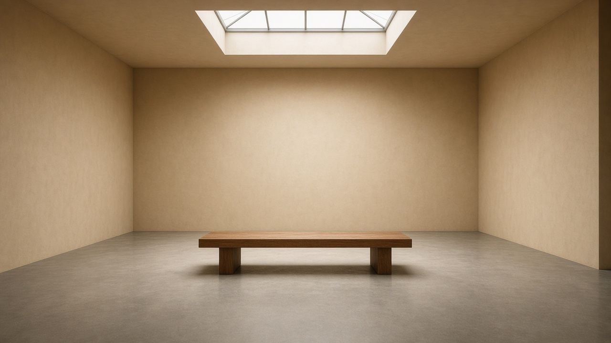
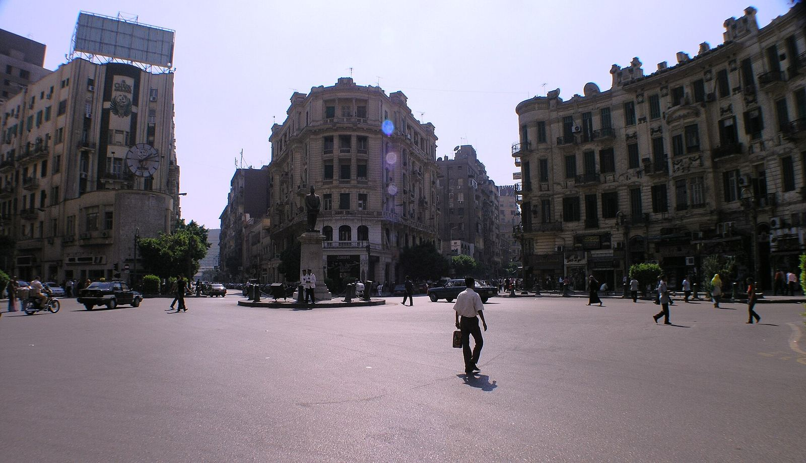
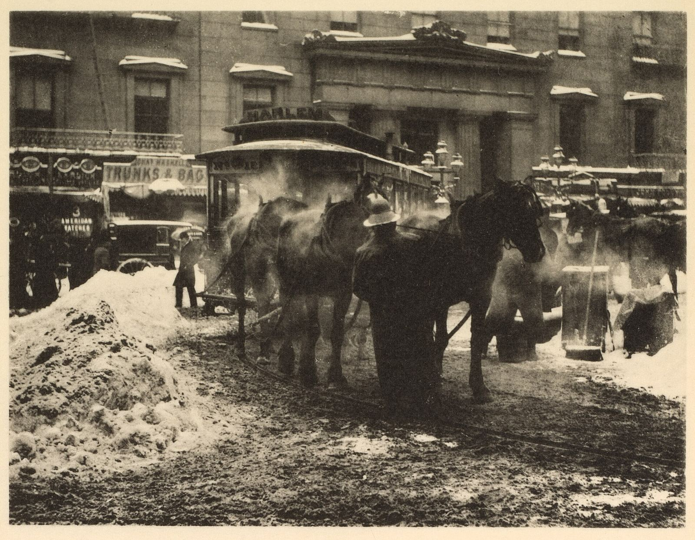
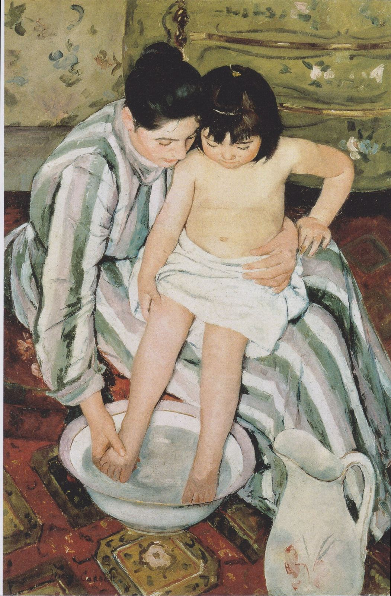
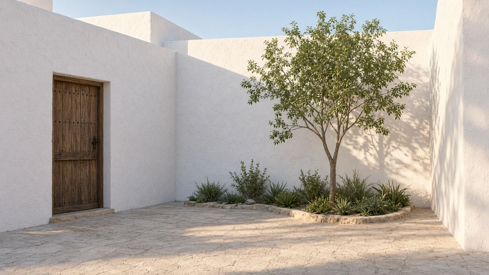

أخبار الفن
أخبار الفن
أخبار المعارض هنا متكتوبة من إعلانات المتاحف ووكالات الأنباء وأدلة البرامج المنشورة في أكتوبر 2026. كل صورة ليها صاحب وترخيص. لو الصورة لمبنى أو لوحة قديمة، بنقول كده بصراحة وماندّعيش إنها لقطة من قاعة المعرض.

الدوحةمتحف يفتح «ما يبقى في ذهن الفنان» عن جماعة بغداد
المعرض عن جماعة بغداد للفن الحديث يُفتح في 25 أكتوبر 2026 ويستمر حتى 6 فبراير 2027، بقيّمة ندى الشبوط.
 أبوظبي
أبوظبي«توابل وعجائب» في اللوفر أبوظبي: طرق المحيط الهندي
معرض مع متحف غيميه من 14 أكتوبر 2026 إلى 14 فبراير 2027، عن تجارة التوابل والنسيج والخزف.

القاهرةوسط البلد كأرشيف حي: الدورة السادسة من حي الفن
آرت دي إيجيبت تفتح Alive Archive من 11 أكتوبر إلى 8 نوفمبر 2026 في الفاكتوري وأكسيس ومرور كوداك.
 باريس
باريسمحمد الفرج في لويس فويتون: أول عرض فردي له في مؤسسة فرنسية
Open Space #19 من 9 أكتوبر 2026، بعنوان I'd rather be a dragonfly than a lion، عن الأحساء.

لندنتيت مودرن: «ضوء وسحر» وبداية التصوير كفن
المعرض من 14 أكتوبر 2026 إلى 21 فبراير 2027، حوالي 200 طبعة قديمة لأكثر من 80 فنان، عن البيكتوريالية كحركة عالمية.

باريسماري كاسات في أورسيه: استقلال، وحوالي ثمانين عمل
العرض من 6 أكتوبر 2026 مع الناشيونال غاليري في لندن ومتحف الفنون في بوسطن، ضمن أربعين سنة على أورسيه.
 باريس
باريسثورباران في اللوفر: استعادية للرسام اللي مات سنة 1664
الدليل بيحدد الافتتاح في 7 أكتوبر 2026، ويغطي تكليفات الأديرة والبورتريه والطبيعة الصامتة.

المحرقزهرة الغامدي في بيت بن مطر: ذاكرة بخامات من الباحة
العرض من 19 أكتوبر إلى 9 ديسمبر 2026 في المحرق، للفنانة السعودية اللي مثّلت بلادها في بينالي البندقية 2019.